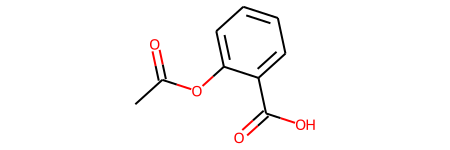
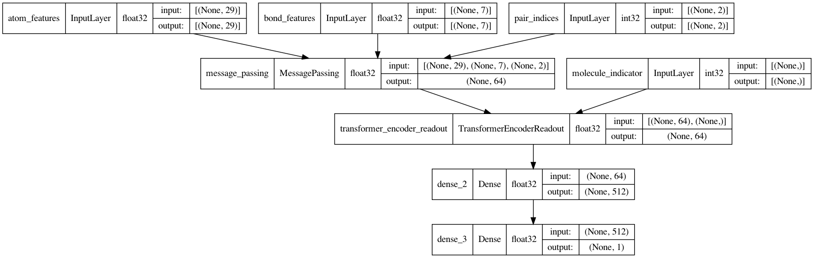
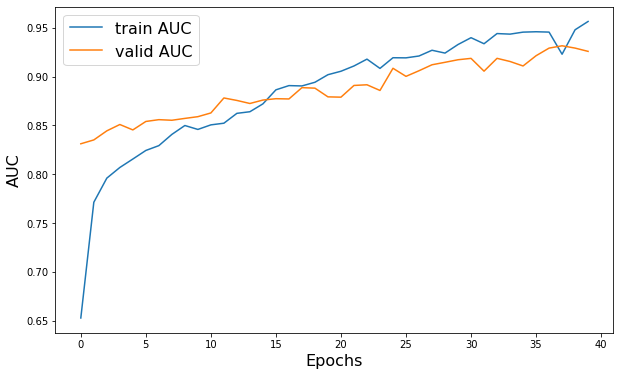
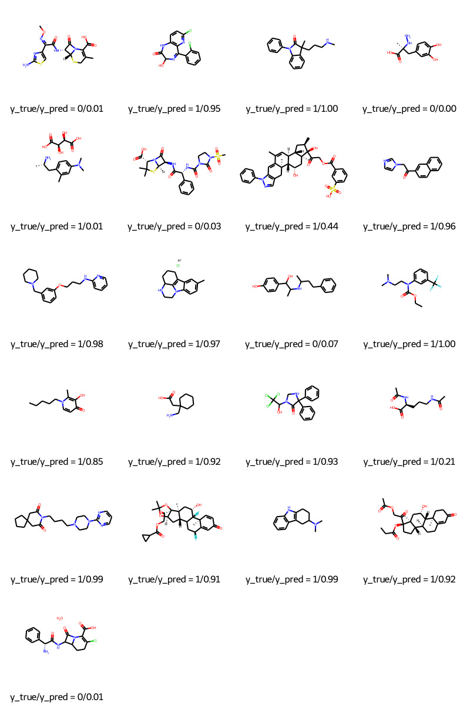

Message-passing neural network (MPNN) for molecular property prediction
Author: akensert
Date created: 2021/08/16
Last modified: 2021/12/27
Description: Implementation of an MPNN to predict blood-brain barrier permeability.

Introduction
In this tutorial, we will implement a type of graph neural network (GNN) known as _ message passing neural network_ (MPNN) to predict graph properties. Specifically, we will implement an MPNN to predict a molecular property known as blood-brain barrier permeability (BBBP).
Motivation: as molecules are naturally represented as an undirected graph G = (V, E),
where V is a set or vertices (nodes; atoms) and E a set of edges (bonds), GNNs (such
as MPNN) are proving to be a useful method for predicting molecular properties.
Until now, more traditional methods, such as random forests, support vector machines, etc., have been commonly used to predict molecular properties. In contrast to GNNs, these traditional approaches often operate on precomputed molecular features such as molecular weight, polarity, charge, number of carbon atoms, etc. Although these molecular features prove to be good predictors for various molecular properties, it is hypothesized that operating on these more "raw", "low-level", features could prove even better.
References
In recent years, a lot of effort has been put into developing neural networks for graph data, including molecular graphs. For a summary of graph neural networks, see e.g., A Comprehensive Survey on Graph Neural Networks and Graph Neural Networks: A Review of Methods and Applications; and for further reading on the specific graph neural network implemented in this tutorial see Neural Message Passing for Quantum Chemistry and DeepChem's MPNNModel.
Setup
Install RDKit and other dependencies
(Text below taken from this tutorial).
RDKit is a collection of cheminformatics and machine-learning software written in C++ and Python. In this tutorial, RDKit is used to conveniently and efficiently transform SMILES to molecule objects, and then from those obtain sets of atoms and bonds.
SMILES expresses the structure of a given molecule in the form of an ASCII string. The SMILES string is a compact encoding which, for smaller molecules, is relatively human-readable. Encoding molecules as a string both alleviates and facilitates database and/or web searching of a given molecule. RDKit uses algorithms to accurately transform a given SMILES to a molecule object, which can then be used to compute a great number of molecular properties/features.
Notice, RDKit is commonly installed via Conda. However, thanks to rdkit_platform_wheels, rdkit can now (for the sake of this tutorial) be installed easily via pip, as follows:
pip -q install rdkit-pypi
And for easy and efficient reading of csv files and visualization, the below needs to be installed:
pip -q install pandas
pip -q install Pillow
pip -q install matplotlib
pip -q install pydot
sudo apt-get -qq install graphviz
Import packages
import os
# Temporary suppress tf logs
os.environ["TF_CPP_MIN_LOG_LEVEL"] = "3"
import tensorflow as tf
from tensorflow import keras
from tensorflow.keras import layers
import numpy as np
import pandas as pd
import matplotlib.pyplot as plt
import warnings
from rdkit import Chem
from rdkit import RDLogger
from rdkit.Chem.Draw import IPythonConsole
from rdkit.Chem.Draw import MolsToGridImage
# Temporary suppress warnings and RDKit logs
warnings.filterwarnings("ignore")
RDLogger.DisableLog("rdApp.*")
np.random.seed(42)
tf.random.set_seed(42)
Dataset
Information about the dataset can be found in A Bayesian Approach to in Silico Blood-Brain Barrier Penetration Modeling and MoleculeNet: A Benchmark for Molecular Machine Learning. The dataset will be downloaded from MoleculeNet.org.
About
The dataset contains 2,050 molecules. Each molecule come with a name, label and SMILES string.
The blood-brain barrier (BBB) is a membrane separating the blood from the brain extracellular fluid, hence blocking out most drugs (molecules) from reaching the brain. Because of this, the BBBP has been important to study for the development of new drugs that aim to target the central nervous system. The labels for this data set are binary (1 or 0) and indicate the permeability of the molecules.
csv_path = keras.utils.get_file(
"BBBP.csv", "https://deepchemdata.s3-us-west-1.amazonaws.com/datasets/BBBP.csv"
)
df = pd.read_csv(csv_path, usecols=[1, 2, 3])
df.iloc[96:104]
| name | p_np | smiles | |
|---|---|---|---|
| 96 | cefoxitin | 1 | CO[C@]1(NC(=O)Cc2sccc2)[C@H]3SCC(=C(N3C1=O)C(O... |
| 97 | Org34167 | 1 | NC(CC=C)c1ccccc1c2noc3c2cccc3 |
| 98 | 9-OH Risperidone | 1 | OC1C(N2CCC1)=NC(C)=C(CCN3CCC(CC3)c4c5ccc(F)cc5... |
| 99 | acetaminophen | 1 | CC(=O)Nc1ccc(O)cc1 |
| 100 | acetylsalicylate | 0 | CC(=O)Oc1ccccc1C(O)=O |
| 101 | allopurinol | 0 | O=C1N=CN=C2NNC=C12 |
| 102 | Alprostadil | 0 | CCCCC[C@H](O)/C=C/[C@H]1[C@H](O)CC(=O)[C@@H]1C... |
| 103 | aminophylline | 0 | CN1C(=O)N(C)c2nc[nH]c2C1=O.CN3C(=O)N(C)c4nc[nH... |
Define features
To encode features for atoms and bonds (which we will need later),
we'll define two classes: AtomFeaturizer and BondFeaturizer respectively.
To reduce the lines of code, i.e., to keep this tutorial short and concise, only about a handful of (atom and bond) features will be considered: [atom features] symbol (element), number of valence electrons, number of hydrogen bonds, orbital hybridization, [bond features] (covalent) bond type, and conjugation.
class Featurizer:
def __init__(self, allowable_sets):
self.dim = 0
self.features_mapping = {}
for k, s in allowable_sets.items():
s = sorted(list(s))
self.features_mapping[k] = dict(zip(s, range(self.dim, len(s) + self.dim)))
self.dim += len(s)
def encode(self, inputs):
output = np.zeros((self.dim,))
for name_feature, feature_mapping in self.features_mapping.items():
feature = getattr(self, name_feature)(inputs)
if feature not in feature_mapping:
continue
output[feature_mapping[feature]] = 1.0
return output
class AtomFeaturizer(Featurizer):
def __init__(self, allowable_sets):
super().__init__(allowable_sets)
def symbol(self, atom):
return atom.GetSymbol()
def n_valence(self, atom):
return atom.GetTotalValence()
def n_hydrogens(self, atom):
return atom.GetTotalNumHs()
def hybridization(self, atom):
return atom.GetHybridization().name.lower()
class BondFeaturizer(Featurizer):
def __init__(self, allowable_sets):
super().__init__(allowable_sets)
self.dim += 1
def encode(self, bond):
output = np.zeros((self.dim,))
if bond is None:
output[-1] = 1.0
return output
output = super().encode(bond)
return output
def bond_type(self, bond):
return bond.GetBondType().name.lower()
def conjugated(self, bond):
return bond.GetIsConjugated()
atom_featurizer = AtomFeaturizer(
allowable_sets={
"symbol": {"B", "Br", "C", "Ca", "Cl", "F", "H", "I", "N", "Na", "O", "P", "S"},
"n_valence": {0, 1, 2, 3, 4, 5, 6},
"n_hydrogens": {0, 1, 2, 3, 4},
"hybridization": {"s", "sp", "sp2", "sp3"},
}
)
bond_featurizer = BondFeaturizer(
allowable_sets={
"bond_type": {"single", "double", "triple", "aromatic"},
"conjugated": {True, False},
}
)
Generate graphs
Before we can generate complete graphs from SMILES, we need to implement the following functions:
-
molecule_from_smiles, which takes as input a SMILES and returns a molecule object. This is all handled by RDKit. -
graph_from_molecule, which takes as input a molecule object and returns a graph, represented as a three-tuple (atom_features, bond_features, pair_indices). For this we will make use of the classes defined previously.
Finally, we can now implement the function graphs_from_smiles, which applies function (1)
and subsequently (2) on all SMILES of the training, validation and test datasets.
Notice: although scaffold splitting is recommended for this data set (see here), for simplicity, simple random splittings were performed.
def molecule_from_smiles(smiles):
# MolFromSmiles(m, sanitize=True) should be equivalent to
# MolFromSmiles(m, sanitize=False) -> SanitizeMol(m) -> AssignStereochemistry(m, ...)
molecule = Chem.MolFromSmiles(smiles, sanitize=False)
# If sanitization is unsuccessful, catch the error, and try again without
# the sanitization step that caused the error
flag = Chem.SanitizeMol(molecule, catchErrors=True)
if flag != Chem.SanitizeFlags.SANITIZE_NONE:
Chem.SanitizeMol(molecule, sanitizeOps=Chem.SanitizeFlags.SANITIZE_ALL ^ flag)
Chem.AssignStereochemistry(molecule, cleanIt=True, force=True)
return molecule
def graph_from_molecule(molecule):
# Initialize graph
atom_features = []
bond_features = []
pair_indices = []
for atom in molecule.GetAtoms():
atom_features.append(atom_featurizer.encode(atom))
# Add self-loops
pair_indices.append([atom.GetIdx(), atom.GetIdx()])
bond_features.append(bond_featurizer.encode(None))
for neighbor in atom.GetNeighbors():
bond = molecule.GetBondBetweenAtoms(atom.GetIdx(), neighbor.GetIdx())
pair_indices.append([atom.GetIdx(), neighbor.GetIdx()])
bond_features.append(bond_featurizer.encode(bond))
return np.array(atom_features), np.array(bond_features), np.array(pair_indices)
def graphs_from_smiles(smiles_list):
# Initialize graphs
atom_features_list = []
bond_features_list = []
pair_indices_list = []
for smiles in smiles_list:
molecule = molecule_from_smiles(smiles)
atom_features, bond_features, pair_indices = graph_from_molecule(molecule)
atom_features_list.append(atom_features)
bond_features_list.append(bond_features)
pair_indices_list.append(pair_indices)
# Convert lists to ragged tensors for tf.data.Dataset later on
return (
tf.ragged.constant(atom_features_list, dtype=tf.float32),
tf.ragged.constant(bond_features_list, dtype=tf.float32),
tf.ragged.constant(pair_indices_list, dtype=tf.int64),
)
# Shuffle array of indices ranging from 0 to 2049
permuted_indices = np.random.permutation(np.arange(df.shape[0]))
# Train set: 80 % of data
train_index = permuted_indices[: int(df.shape[0] * 0.8)]
x_train = graphs_from_smiles(df.iloc[train_index].smiles)
y_train = df.iloc[train_index].p_np
# Valid set: 19 % of data
valid_index = permuted_indices[int(df.shape[0] * 0.8) : int(df.shape[0] * 0.99)]
x_valid = graphs_from_smiles(df.iloc[valid_index].smiles)
y_valid = df.iloc[valid_index].p_np
# Test set: 1 % of data
test_index = permuted_indices[int(df.shape[0] * 0.99) :]
x_test = graphs_from_smiles(df.iloc[test_index].smiles)
y_test = df.iloc[test_index].p_np
Test the functions
print(f"Name:\t{df.name[100]}\nSMILES:\t{df.smiles[100]}\nBBBP:\t{df.p_np[100]}")
molecule = molecule_from_smiles(df.iloc[100].smiles)
print("Molecule:")
molecule
Name: acetylsalicylate
SMILES: CC(=O)Oc1ccccc1C(O)=O
BBBP: 0
Molecule:

graph = graph_from_molecule(molecule)
print("Graph (including self-loops):")
print("\tatom features\t", graph[0].shape)
print("\tbond features\t", graph[1].shape)
print("\tpair indices\t", graph[2].shape)
Graph (including self-loops):
atom features (13, 29)
bond features (39, 7)
pair indices (39, 2)
Create a tf.data.Dataset
In this tutorial, the MPNN implementation will take as input (per iteration) a single graph. Therefore, given a batch of (sub)graphs (molecules), we need to merge them into a single graph (we'll refer to this graph as global graph). This global graph is a disconnected graph where each subgraph is completely separated from the other subgraphs.
def prepare_batch(x_batch, y_batch):
"""Merges (sub)graphs of batch into a single global (disconnected) graph
"""
atom_features, bond_features, pair_indices = x_batch
# Obtain number of atoms and bonds for each graph (molecule)
num_atoms = atom_features.row_lengths()
num_bonds = bond_features.row_lengths()
# Obtain partition indices (molecule_indicator), which will be used to
# gather (sub)graphs from global graph in model later on
molecule_indices = tf.range(len(num_atoms))
molecule_indicator = tf.repeat(molecule_indices, num_atoms)
# Merge (sub)graphs into a global (disconnected) graph. Adding 'increment' to
# 'pair_indices' (and merging ragged tensors) actualizes the global graph
gather_indices = tf.repeat(molecule_indices[:-1], num_bonds[1:])
increment = tf.cumsum(num_atoms[:-1])
increment = tf.pad(tf.gather(increment, gather_indices), [(num_bonds[0], 0)])
pair_indices = pair_indices.merge_dims(outer_axis=0, inner_axis=1).to_tensor()
pair_indices = pair_indices + increment[:, tf.newaxis]
atom_features = atom_features.merge_dims(outer_axis=0, inner_axis=1).to_tensor()
bond_features = bond_features.merge_dims(outer_axis=0, inner_axis=1).to_tensor()
return (atom_features, bond_features, pair_indices, molecule_indicator), y_batch
def MPNNDataset(X, y, batch_size=32, shuffle=False):
dataset = tf.data.Dataset.from_tensor_slices((X, (y)))
if shuffle:
dataset = dataset.shuffle(1024)
return dataset.batch(batch_size).map(prepare_batch, -1).prefetch(-1)
Model
The MPNN model can take on various shapes and forms. In this tutorial, we will implement an MPNN based on the original paper Neural Message Passing for Quantum Chemistry and DeepChem's MPNNModel. The MPNN of this tutorial consists of three stages: message passing, readout and classification.
Message passing
The message passing step itself consists of two parts:
-
The edge network, which passes messages from 1-hop neighbors
w_{i}ofvtov, based on the edge features between them (e_{vw_{i}}), resulting in an updated node (state)v'.w_{i}denotes thei:thneighbor ofv. -
The gated recurrent unit (GRU), which takes as input the most recent node state and updates it based on previous node states. In other words, the most recent node state serves as the input to the GRU, while the previous node states are incorporated within the memory state of the GRU. This allows information to travel from one node state (e.g.,
v) to another (e.g.,v'').
Importantly, step (1) and (2) are repeated for k steps, and where at each step 1...k,
the radius (or number of hops) of aggregated information from v increases by 1.
class EdgeNetwork(layers.Layer):
def build(self, input_shape):
self.atom_dim = input_shape[0][-1]
self.bond_dim = input_shape[1][-1]
self.kernel = self.add_weight(
shape=(self.bond_dim, self.atom_dim * self.atom_dim),
initializer="glorot_uniform",
name="kernel",
)
self.bias = self.add_weight(
shape=(self.atom_dim * self.atom_dim), initializer="zeros", name="bias",
)
self.built = True
def call(self, inputs):
atom_features, bond_features, pair_indices = inputs
# Apply linear transformation to bond features
bond_features = tf.matmul(bond_features, self.kernel) + self.bias
# Reshape for neighborhood aggregation later
bond_features = tf.reshape(bond_features, (-1, self.atom_dim, self.atom_dim))
# Obtain atom features of neighbors
atom_features_neighbors = tf.gather(atom_features, pair_indices[:, 1])
atom_features_neighbors = tf.expand_dims(atom_features_neighbors, axis=-1)
# Apply neighborhood aggregation
transformed_features = tf.matmul(bond_features, atom_features_neighbors)
transformed_features = tf.squeeze(transformed_features, axis=-1)
aggregated_features = tf.math.unsorted_segment_sum(
transformed_features,
pair_indices[:, 0],
num_segments=tf.shape(atom_features)[0],
)
return aggregated_features
class MessagePassing(layers.Layer):
def __init__(self, units, steps=4, **kwargs):
super().__init__(**kwargs)
self.units = units
self.steps = steps
def build(self, input_shape):
self.atom_dim = input_shape[0][-1]
self.message_step = EdgeNetwork()
self.pad_length = max(0, self.units - self.atom_dim)
self.update_step = layers.GRUCell(self.atom_dim + self.pad_length)
self.built = True
def call(self, inputs):
atom_features, bond_features, pair_indices = inputs
# Pad atom features if number of desired units exceeds atom_features dim.
# Alternatively, a dense layer could be used here.
atom_features_updated = tf.pad(atom_features, [(0, 0), (0, self.pad_length)])
# Perform a number of steps of message passing
for i in range(self.steps):
# Aggregate information from neighbors
atom_features_aggregated = self.message_step(
[atom_features_updated, bond_features, pair_indices]
)
# Update node state via a step of GRU
atom_features_updated, _ = self.update_step(
atom_features_aggregated, atom_features_updated
)
return atom_features_updated
Readout
When the message passing procedure ends, the k-step-aggregated node states are to be partitioned into subgraphs (corresponding to each molecule in the batch) and subsequently reduced to graph-level embeddings. In the original paper, a set-to-set layer was used for this purpose. In this tutorial however, a transformer encoder + average pooling will be used. Specifically:
- the k-step-aggregated node states will be partitioned into the subgraphs (corresponding to each molecule in the batch);
- each subgraph will then be padded to match the subgraph with the greatest number of nodes, followed
by a
tf.stack(...); - the (stacked padded) tensor, encoding subgraphs (each subgraph containing a set of node states), are masked to make sure the paddings don't interfere with training;
- finally, the tensor is passed to the transformer followed by average pooling.
class PartitionPadding(layers.Layer):
def __init__(self, batch_size, **kwargs):
super().__init__(**kwargs)
self.batch_size = batch_size
def call(self, inputs):
atom_features, molecule_indicator = inputs
# Obtain subgraphs
atom_features_partitioned = tf.dynamic_partition(
atom_features, molecule_indicator, self.batch_size
)
# Pad and stack subgraphs
num_atoms = [tf.shape(f)[0] for f in atom_features_partitioned]
max_num_atoms = tf.reduce_max(num_atoms)
atom_features_stacked = tf.stack(
[
tf.pad(f, [(0, max_num_atoms - n), (0, 0)])
for f, n in zip(atom_features_partitioned, num_atoms)
],
axis=0,
)
# Remove empty subgraphs (usually for last batch in dataset)
gather_indices = tf.where(tf.reduce_sum(atom_features_stacked, (1, 2)) != 0)
gather_indices = tf.squeeze(gather_indices, axis=-1)
return tf.gather(atom_features_stacked, gather_indices, axis=0)
class TransformerEncoderReadout(layers.Layer):
def __init__(
self, num_heads=8, embed_dim=64, dense_dim=512, batch_size=32, **kwargs
):
super().__init__(**kwargs)
self.partition_padding = PartitionPadding(batch_size)
self.attention = layers.MultiHeadAttention(num_heads, embed_dim)
self.dense_proj = keras.Sequential(
[layers.Dense(dense_dim, activation="relu"), layers.Dense(embed_dim),]
)
self.layernorm_1 = layers.LayerNormalization()
self.layernorm_2 = layers.LayerNormalization()
self.average_pooling = layers.GlobalAveragePooling1D()
def call(self, inputs):
x = self.partition_padding(inputs)
padding_mask = tf.reduce_any(tf.not_equal(x, 0.0), axis=-1)
padding_mask = padding_mask[:, tf.newaxis, tf.newaxis, :]
attention_output = self.attention(x, x, attention_mask=padding_mask)
proj_input = self.layernorm_1(x + attention_output)
proj_output = self.layernorm_2(proj_input + self.dense_proj(proj_input))
return self.average_pooling(proj_output)
Message Passing Neural Network (MPNN)
It is now time to complete the MPNN model. In addition to the message passing and readout, a two-layer classification network will be implemented to make predictions of BBBP.
def MPNNModel(
atom_dim,
bond_dim,
batch_size=32,
message_units=64,
message_steps=4,
num_attention_heads=8,
dense_units=512,
):
atom_features = layers.Input((atom_dim), dtype="float32", name="atom_features")
bond_features = layers.Input((bond_dim), dtype="float32", name="bond_features")
pair_indices = layers.Input((2), dtype="int32", name="pair_indices")
molecule_indicator = layers.Input((), dtype="int32", name="molecule_indicator")
x = MessagePassing(message_units, message_steps)(
[atom_features, bond_features, pair_indices]
)
x = TransformerEncoderReadout(
num_attention_heads, message_units, dense_units, batch_size
)([x, molecule_indicator])
x = layers.Dense(dense_units, activation="relu")(x)
x = layers.Dense(1, activation="sigmoid")(x)
model = keras.Model(
inputs=[atom_features, bond_features, pair_indices, molecule_indicator],
outputs=[x],
)
return model
mpnn = MPNNModel(
atom_dim=x_train[0][0][0].shape[0], bond_dim=x_train[1][0][0].shape[0],
)
mpnn.compile(
loss=keras.losses.BinaryCrossentropy(),
optimizer=keras.optimizers.Adam(learning_rate=5e-4),
metrics=[keras.metrics.AUC(name="AUC")],
)
keras.utils.plot_model(mpnn, show_dtype=True, show_shapes=True)

Training
train_dataset = MPNNDataset(x_train, y_train)
valid_dataset = MPNNDataset(x_valid, y_valid)
test_dataset = MPNNDataset(x_test, y_test)
history = mpnn.fit(
train_dataset,
validation_data=valid_dataset,
epochs=40,
verbose=2,
class_weight={0: 2.0, 1: 0.5},
)
plt.figure(figsize=(10, 6))
plt.plot(history.history["AUC"], label="train AUC")
plt.plot(history.history["val_AUC"], label="valid AUC")
plt.xlabel("Epochs", fontsize=16)
plt.ylabel("AUC", fontsize=16)
plt.legend(fontsize=16)
Epoch 1/40
52/52 - 26s - loss: 0.5572 - AUC: 0.6527 - val_loss: 0.4660 - val_AUC: 0.8312 - 26s/epoch - 501ms/step
Epoch 2/40
52/52 - 22s - loss: 0.4817 - AUC: 0.7713 - val_loss: 0.6889 - val_AUC: 0.8351 - 22s/epoch - 416ms/step
Epoch 3/40
52/52 - 24s - loss: 0.4611 - AUC: 0.7960 - val_loss: 0.5863 - val_AUC: 0.8444 - 24s/epoch - 457ms/step
Epoch 4/40
52/52 - 19s - loss: 0.4493 - AUC: 0.8069 - val_loss: 0.5059 - val_AUC: 0.8509 - 19s/epoch - 372ms/step
Epoch 5/40
52/52 - 21s - loss: 0.4420 - AUC: 0.8155 - val_loss: 0.4965 - val_AUC: 0.8454 - 21s/epoch - 405ms/step
Epoch 6/40
52/52 - 22s - loss: 0.4344 - AUC: 0.8243 - val_loss: 0.5307 - val_AUC: 0.8540 - 22s/epoch - 419ms/step
Epoch 7/40
52/52 - 26s - loss: 0.4301 - AUC: 0.8293 - val_loss: 0.5131 - val_AUC: 0.8559 - 26s/epoch - 503ms/step
Epoch 8/40
52/52 - 31s - loss: 0.4163 - AUC: 0.8408 - val_loss: 0.5361 - val_AUC: 0.8552 - 31s/epoch - 599ms/step
Epoch 9/40
52/52 - 30s - loss: 0.4095 - AUC: 0.8499 - val_loss: 0.5371 - val_AUC: 0.8572 - 30s/epoch - 578ms/step
Epoch 10/40
52/52 - 23s - loss: 0.4107 - AUC: 0.8459 - val_loss: 0.5923 - val_AUC: 0.8589 - 23s/epoch - 444ms/step
Epoch 11/40
52/52 - 29s - loss: 0.4107 - AUC: 0.8505 - val_loss: 0.5070 - val_AUC: 0.8627 - 29s/epoch - 553ms/step
Epoch 12/40
52/52 - 25s - loss: 0.4005 - AUC: 0.8522 - val_loss: 0.5417 - val_AUC: 0.8781 - 25s/epoch - 471ms/step
Epoch 13/40
52/52 - 22s - loss: 0.3924 - AUC: 0.8623 - val_loss: 0.5915 - val_AUC: 0.8755 - 22s/epoch - 425ms/step
Epoch 14/40
52/52 - 19s - loss: 0.3872 - AUC: 0.8640 - val_loss: 0.5852 - val_AUC: 0.8724 - 19s/epoch - 365ms/step
Epoch 15/40
52/52 - 19s - loss: 0.3812 - AUC: 0.8720 - val_loss: 0.4949 - val_AUC: 0.8759 - 19s/epoch - 362ms/step
Epoch 16/40
52/52 - 27s - loss: 0.3604 - AUC: 0.8864 - val_loss: 0.5076 - val_AUC: 0.8773 - 27s/epoch - 521ms/step
Epoch 17/40
52/52 - 37s - loss: 0.3554 - AUC: 0.8907 - val_loss: 0.4556 - val_AUC: 0.8771 - 37s/epoch - 712ms/step
Epoch 18/40
52/52 - 23s - loss: 0.3554 - AUC: 0.8904 - val_loss: 0.4854 - val_AUC: 0.8887 - 23s/epoch - 452ms/step
Epoch 19/40
52/52 - 26s - loss: 0.3504 - AUC: 0.8942 - val_loss: 0.4622 - val_AUC: 0.8881 - 26s/epoch - 507ms/step
Epoch 20/40
52/52 - 20s - loss: 0.3378 - AUC: 0.9019 - val_loss: 0.5568 - val_AUC: 0.8792 - 20s/epoch - 390ms/step
Epoch 21/40
52/52 - 19s - loss: 0.3324 - AUC: 0.9055 - val_loss: 0.5623 - val_AUC: 0.8789 - 19s/epoch - 363ms/step
Epoch 22/40
52/52 - 19s - loss: 0.3248 - AUC: 0.9109 - val_loss: 0.5486 - val_AUC: 0.8909 - 19s/epoch - 357ms/step
Epoch 23/40
52/52 - 18s - loss: 0.3126 - AUC: 0.9179 - val_loss: 0.5684 - val_AUC: 0.8916 - 18s/epoch - 348ms/step
Epoch 24/40
52/52 - 18s - loss: 0.3296 - AUC: 0.9084 - val_loss: 0.5462 - val_AUC: 0.8858 - 18s/epoch - 352ms/step
Epoch 25/40
52/52 - 18s - loss: 0.3098 - AUC: 0.9193 - val_loss: 0.4212 - val_AUC: 0.9085 - 18s/epoch - 349ms/step
Epoch 26/40
52/52 - 18s - loss: 0.3095 - AUC: 0.9192 - val_loss: 0.4991 - val_AUC: 0.9002 - 18s/epoch - 348ms/step
Epoch 27/40
52/52 - 18s - loss: 0.3056 - AUC: 0.9211 - val_loss: 0.4739 - val_AUC: 0.9060 - 18s/epoch - 349ms/step
Epoch 28/40
52/52 - 18s - loss: 0.2942 - AUC: 0.9270 - val_loss: 0.4188 - val_AUC: 0.9121 - 18s/epoch - 344ms/step
Epoch 29/40
52/52 - 18s - loss: 0.3004 - AUC: 0.9241 - val_loss: 0.4056 - val_AUC: 0.9146 - 18s/epoch - 351ms/step
Epoch 30/40
52/52 - 18s - loss: 0.2810 - AUC: 0.9328 - val_loss: 0.3923 - val_AUC: 0.9172 - 18s/epoch - 355ms/step
Epoch 31/40
52/52 - 18s - loss: 0.2661 - AUC: 0.9398 - val_loss: 0.3609 - val_AUC: 0.9186 - 18s/epoch - 349ms/step
Epoch 32/40
52/52 - 19s - loss: 0.2797 - AUC: 0.9336 - val_loss: 0.3764 - val_AUC: 0.9055 - 19s/epoch - 357ms/step
Epoch 33/40
52/52 - 19s - loss: 0.2552 - AUC: 0.9441 - val_loss: 0.3941 - val_AUC: 0.9187 - 19s/epoch - 368ms/step
Epoch 34/40
52/52 - 23s - loss: 0.2601 - AUC: 0.9435 - val_loss: 0.4128 - val_AUC: 0.9154 - 23s/epoch - 443ms/step
Epoch 35/40
52/52 - 32s - loss: 0.2533 - AUC: 0.9455 - val_loss: 0.4191 - val_AUC: 0.9109 - 32s/epoch - 615ms/step
Epoch 36/40
52/52 - 23s - loss: 0.2530 - AUC: 0.9459 - val_loss: 0.4276 - val_AUC: 0.9213 - 23s/epoch - 435ms/step
Epoch 37/40
52/52 - 31s - loss: 0.2531 - AUC: 0.9456 - val_loss: 0.3950 - val_AUC: 0.9292 - 31s/epoch - 593ms/step
Epoch 38/40
52/52 - 22s - loss: 0.3039 - AUC: 0.9229 - val_loss: 0.3114 - val_AUC: 0.9315 - 22s/epoch - 428ms/step
Epoch 39/40
52/52 - 20s - loss: 0.2477 - AUC: 0.9479 - val_loss: 0.3584 - val_AUC: 0.9292 - 20s/epoch - 391ms/step
Epoch 40/40
52/52 - 22s - loss: 0.2276 - AUC: 0.9565 - val_loss: 0.3279 - val_AUC: 0.9258 - 22s/epoch - 416ms/step
<matplotlib.legend.Legend at 0x1603c63d0>

Predicting
molecules = [molecule_from_smiles(df.smiles.values[index]) for index in test_index]
y_true = [df.p_np.values[index] for index in test_index]
y_pred = tf.squeeze(mpnn.predict(test_dataset), axis=1)
legends = [f"y_true/y_pred = {y_true[i]}/{y_pred[i]:.2f}" for i in range(len(y_true))]
MolsToGridImage(molecules, molsPerRow=4, legends=legends)

Conclusions
In this tutorial, we demonstrated a message passing neural network (MPNN) to predict blood-brain barrier permeability (BBBP) for a number of different molecules. We first had to construct graphs from SMILES, then build a Keras model that could operate on these graphs, and finally train the model to make the predictions.
Example available on HuggingFace
| Trained Model | Demo |
|---|---|